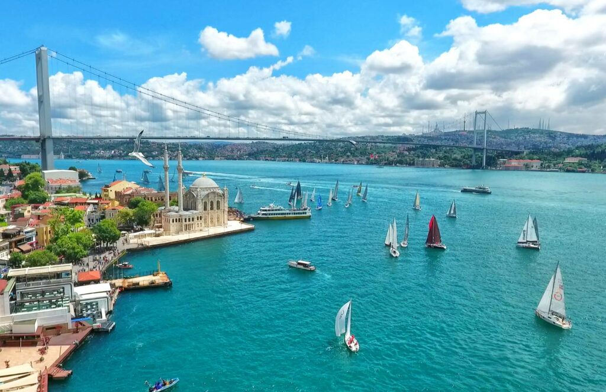

Shows & Entertainment
Istanbul's cultural calendar is always moving. This guide helps you understand the main venues and the kinds of experiences you can look for.
Culture You Can Watch, Hear and Feel
Istanbul's entertainment calendar spans concerts, theatre, opera, ballet, dance, festivals, exhibitions and family programmes. The official Istanbul events guide provides current event listings by date, district, category and venue.
Major Cultural Venues
Atatürk Cultural Centre
A major cultural venue at Taksim for concerts, theatre, opera, ballet and exhibitions.
Harbiye Open-Air Theatre
A classic summer concert setting in the city.
Süreyya Opera House
An important performing-arts venue on the Asian side in Kadıköy.
Zorlu PSM
A large contemporary venue for concerts, theatre and other performances.
İstanbul Modern
Contemporary art and exhibitions by the waterfront.
Festivals
Music, film, theatre, art and cultural festivals appear throughout the year.
How to Plan an Evening
Before You Book
- Check date and start time
- Confirm venue location
- Allow time for Istanbul traffic
- Check age restrictions where applicable
Make It a Night
- Dinner before the show
- Waterfront walk after the performance
- Rooftop or dessert stop
- Arrange transport in advance when timing matters
Keep It Current
Events are one of the parts of Istanbul that should not be treated as permanent information. Dates, artists, venues and ticket availability change. Use this guide for orientation and check the current official programme before making plans.
Explore More of Istanbul
Want to experience Istanbul, not just read about it?
Use this guide to plan your own day, or let our concierge team help with the practical details around it.
Request Concierge →